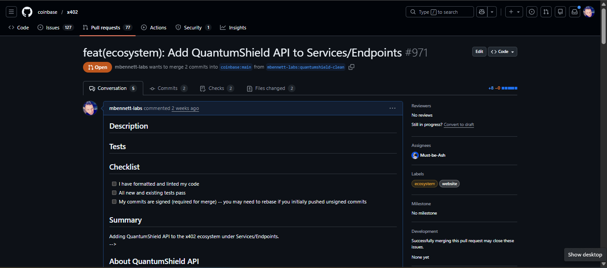
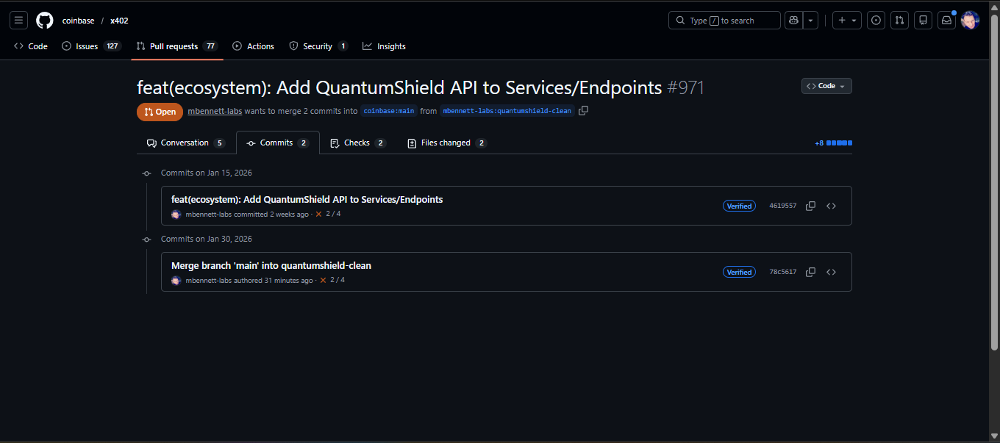

Coinbase x402 Ecosystem
Contributed to Coinbase's official x402 protocol repository — the infrastructure enabling micropayments for the agentic web.
View PR #971 MergedAbout x402
The x402 protocol implements the HTTP 402 "Payment Required" status code, enabling AI agents to pay for services autonomously through micropayments on Base (Coinbase L2).
My Contribution
Added QuantumShield API to the official x402 ecosystem directory — a security-as-a-service API for token risk analysis powered by x402 micropayments.
+ typescript/site/app/ecosystem/partners-data/quantumshield-api/metadata.json
+ typescript/site/public/logos/quantumshield-api.png
PR Screenshots


Technical Details
OQTOPUS device-gateway
OQTOPUS is an open-source, cloud-native orchestration framework for quantum computing workflows. It manages real quantum hardware — job submission, qubit mapping, circuit execution, and result return — across a 20-repository Apache 2.0 ecosystem.
My Contribution
Opened Issue #78 identifying a critical integrity gap in the gRPC CallJob workflow: no cryptographic verification between OpenQASM3 program submission and hardware result return, leaving the interface vulnerable to in-transit tampering without detection.
Submitted PR #79 with a non-breaking attestation module built entirely on Python's standard library — zero new dependencies. The module introduces deterministic SHA-256 hashing for submitted programs, canonical counts, and device identity, plus a full create_job_attestation / verify_attestation round-trip with built-in tamper detection.
+ src/device_gateway/security/__init__.py
+ src/device_gateway/security/attestation.py
~ src/device_gateway/service.py
+ tests/test_attestation.py
9 tests passing. Coverage includes deterministic hashing, order-independent count canonicalization, field validation, and tamper rejection for both modified programs and modified counts.
Technical Details
Why Open Source Contributions Matter
Contributing to established open-source projects demonstrates the ability to collaborate within large, distributed engineering teams, follow strict contribution guidelines, review legacy codebases critically, and deliver production-quality improvements. It proves the capacity to navigate unfamiliar architectures, write maintainable code, communicate security gaps responsibly, and iterate constructively under public review.
Other Projects
QuantumShield API
Security-as-a-service API for token risk analysis with x402 micropayments. Provides honeypot detection, holder risk analysis, and security scoring.
Executive Briefing Generator
AI-powered security assessment tool that generates personalized quantum security reports using NotebookLM + Claude integration.